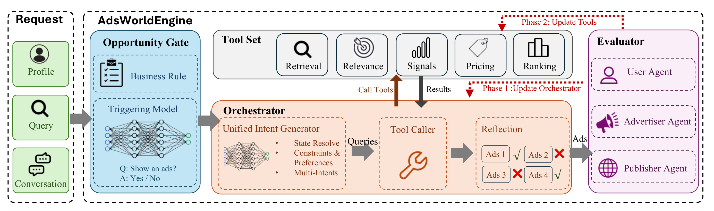
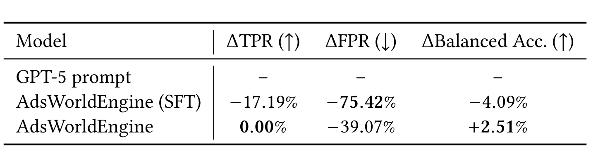
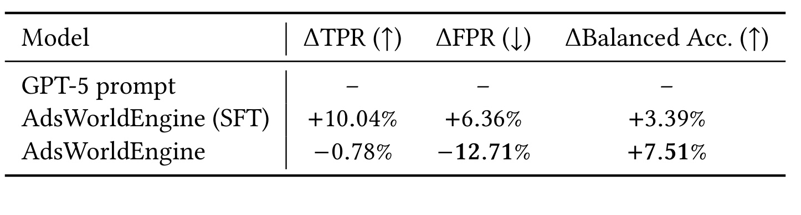
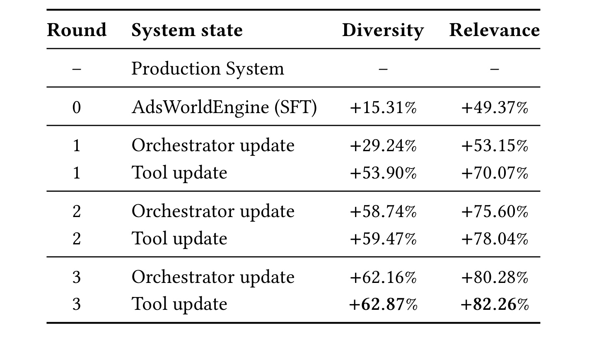

AdsWorldEngine：通过 Orchestrator 与工具共进化构建自演化对话广告 Agent
这篇工作讨论如何把广告能力接入多轮对话助手。论文由 Simiao Zuo、Chenhui Xu、Yimeng Jia、Qiang Lou、Jian Jiao 和 Denis Charles 完成，作者均来自微软；2026 年 8 月 13 日以 arXiv v1 公开，论文入口为 AdsWorldEngine: A Self-Evolving Conversational Advertising Agent through Orchestrator and Tool Coevolution。本轮未核验到公开代码或独立项目页，因此以下内容按生产系统论文阅读，不把未公开实现细节当成可以直接复现的组件。
对话广告面对的不是一个独立搜索词：商业意图可能藏在多轮历史、当前追问与助手回复之间，系统还必须先判断此刻出现广告是在帮助用户，还是在打断对话。只优化触发、检索或生成中的单一环节，无法覆盖这条端到端投放链路。
1. 背景和问题
传统搜索广告把一条较短的用户查询视为主要投放上下文，检索、相关性、排序、定价等模块围绕这个查询工作。多轮对话打破了这个前提。用户可能先问圣诞海滩度假，随后只说“便宜一点”“附近有没有”或“不要加勒比海”；当前句子本身既不是完整需求，也未必含有可以直接检索的商业实体。系统必须回看历史轮次，恢复被省略的目标与硬约束，还要辨别助手回复中新出现的品牌、地点或产品究竟是用户认可的条件，还是助手自行提出的建议。若把后者误写进广告查询，投放链路会把模型自己的补充当作用户偏好，形成一种难以在线察觉的自我强化偏差。
第二层难点是“是否展示”和“展示什么”不能混成一个问题。即使对话出现产品词，也不意味着用户此刻需要广告。例如用户询问遮瑕色号时，助手可以继续通过肤色、底色和已有色样完成信息服务；插入购买广告反而会打断任务。相反，用户明确要求比较具体商品、寻找酒店或购买渠道时，广告可能提供有用入口。这里的错误并不对称：一次不合时宜的曝光会直接伤害信任，而漏掉一次商业机会通常只减少一次变现；把无关广告塞入三个位置之一，也往往比少召回一个相关候选更糟。因而单纯追求触发召回率、广告覆盖率或候选相关性，都不能代表完整用户体验。
第三层难点来自复合系统中的责任分散。一个最终 slate 质量差，可能是 Gate 错误放行，也可能是状态解析漏掉历史约束、意图生成过度同质、检索召回噪声、相关性模型偏宽、排序与定价信号失衡，或反思模块没有去掉重复广告。常见 agent 训练只把下游工具当作固定环境：actor 学会更好地调用当前工具，却无法改变工具对新式查询的响应。AdsWorldEngine 的核心主张是，最终奖励既要更新 Orchestrator，也要反向产生训练检索、相关性和排序工具的偏好数据，使“调用方式”和“可调用能力”一起改变。
把 assistant response 纳入输入也带来一组特别的边界。它确实可以把用户意图具体化：助手先列出酒店、汽车或品牌后，下一轮省略主语的追问可以借助这些内容解析。但 response 并不等于用户确认，系统要保留“用户显式约束”和“助手建议属性”的来源差别；profile 也只能在政策允许时使用。否则，多轮上下文越长，广告查询越可能混入未经用户认可的推断。Opportunity Gate 的硬规则正是为这种隐私、敏感主题和体验约束提供不可被奖励优化绕开的护栏，学习模型只在规则允许的空间内判断帮助性。
从推荐系统角度看，论文研究的并非普通 CTR/CVR 预估，而是候选生成之前的任务重构。Orchestrator 可以生成多个 intent，相当于动态建立多个召回入口；reflection 再对不同入口返回的候选做约束保持、去重和 slate 选择。这样一来，意图拆分质量、工具的可检索性和最终组合质量相互耦合。一个自然语言上很漂亮的 query 可能无法命中库存，一个措辞相似的 query 组合也可能因检索模型不同而返回互补广告。离线奖励必须落在工具执行后的结果，才有可能识别这种语言相似度与服务效果不一致。
作者选择 GPT-5 prompt 和当前 Production System 作为两类基线：前者用于 Gate 与 relevance judge 的主观判断比较，后者用于完整 Orchestrator-tool 链路的离线相对增益。二者回答的问题不同，不能混在一起。GPT-5 prompt 对比侧重 label-grounded 训练是否学到更合适的误差成本；Production System 对比侧重新链路相对现网的最终 slate 分数。线上 A/B 又只报告 RPM 与 coverage。这种证据拆分要求读者逐层核对，而不能用一个 22% 或 80% 数字概括整套机制。
论文因此把对话广告定义成一个 gated agentic decision process。每轮输入由当前 query、对话历史、合规允许的可选用户上下文和 assistant response 共同构成；输出要么 abstain，要么是恰好三条广告的 slate。离线 Evaluator 从用户、广告主与平台三个视角产生反馈，当前实现重点测量逐广告相关性和 slate 多样性。值得注意的是，这不是一篇公开数据集上的标准算法竞赛论文：训练样本、生产基线和在线流量都来自工业系统，许多绝对量未披露。阅读时应把它看成“生产链路与优化机制证据”，而不是把相对提升直接外推到任何推荐或广告场景。
2. 方法
2.1 从 Opportunity Gate 到 top-3 slate
在线链路先由 Opportunity Gate 决定是否允许进入广告流程。Gate 由硬规则和学习式 triggering model 组成：规则承担政策、隐私与敏感场景约束，模型判断广告是否能推进当前任务。通过后，Orchestrator 的 unified intent generator 解析对话状态、抽取约束与偏好并生成 1-3 个商业意图；tool caller 将这些意图送入 retrieval、relevance、signals、pricing 和 ranking 等广告工具；reflection 检查返回候选的相关性、重复度与约束满足情况，最终选择三条广告。若 Gate 拒绝，后续链路全部跳过，因此它既是体验保护层，也是算力与曝光的入口控制器。

Figure 1 把 serving 和训练清楚地分成两种方向。黑灰色箭头描述在线推理：Request 中的 profile、query 与 conversation 进入 Gate，合格请求流向 Orchestrator；Orchestrator 生成 queries、调用 Tool Set、接收 results，再由 reflection 形成广告 slate。右侧 Evaluator 不是线上打分环节，而是离线汇总 User Agent、Advertiser Agent 与 Publisher Agent 的反馈。红色虚线给出两阶段学习路径：Phase 1 固定工具更新 Orchestrator，Phase 2 再用受奖励行为更新工具。这个区分很重要，因为若把 Evaluator 误认为线上 reranker，就会高估论文增加的 serving 复杂度，也会忽略训练时同一个 Evaluator 同时定义优化方向和最终离线评价的闭环风险。
Evaluator 当前重点覆盖两项用户侧信号。相关性在单条广告层面判断候选是否帮助当前对话任务；多样性在三条 slate 内计算广告 embedding 的三组两两余弦相似度，相似度低于 0.3 的 pair 被计为 diverse。系统并不是奖励“生成的意图文字看上去不同”，而是奖励这些意图经过真实工具后能否带来相关且不重复的最终广告。这使优化对象从语言层面的 query 风格，转成工具可执行后的 slate 结果。 代价是评估质量高度依赖 conversation-to-ad relevance judge 和 embedding 阈值是否与真实用户体验一致。
2.2 Orchestrator 轨迹、SFT 与 agentic RL
Orchestrator 是 actor，其训练数据保留最终选择前的中间轨迹：状态解析、约束抽取、意图与查询生成、工具调用以及对候选的反思。论文的旅行例子很好地说明轨迹的作用：用户先要求圣诞期间 28℃ 以上、希思罗直飞、飞行不超过 12 小时的海滩目的地，下一轮仅补充“不要加勒比海”。模型必须把当前轮识别为 refinement 而非 topic shift，继承此前全部硬约束，只新增排除加勒比海；同时不能把助手曾提到的“豪华”或“亲子度假村”擅自提升为用户约束。它生成印度洋、中东和非洲三组查询，工具返回后再去掉重复页面、野生动物旅行噪声和英国内陆住宿，保留互补的三个候选。
第一阶段 SFT 用这类完整轨迹教模型遵守输出格式、形成有效工具调用、保持跨轮约束并稳定输出三条广告。第二阶段 agentic RL 对完整 rollout 评分：轨迹包含意图、工具调用、反思与最终 slate，Evaluator 的 relevance 与 diversity 成为 GRPO 奖励。SFT 能告诉模型“应该生成多样查询”，但只有 rollout 奖励能检验不同文字是否真的检索到不同商户或落地页。因此 agentic RL 优化的不是某个中间句子，而是中间决策与当前工具行为组合后产生的系统结果。 推理时 Orchestrator 仍按相同轨迹调用工具，但离线 Evaluator 不进入服务路径。
2.3 Label-grounded judgment 与 cost-sensitive GRPO
Gate 与 conversation-to-ad relevance 都属于主观生产判断。作者没有让 LLM 自己发明 rubric，而是先写任务级生产指南，由人工依指南给出标签；再让模型在“输入、指南、人标”条件下生成支持该标签的 thinking trace；reflection 检查解释是否真的支持人标、是否遵循指南、是否添加无依据假设；只有通过检查的标签-轨迹对才进入 SFT。论文给出的过滤案例中，人标认为露营地咨询属于信息获取，不应展示广告，但生成 trace 却声称预订平台广告会有帮助，甚至质疑人标错误。尽管文字流畅，reflection 仍以 REASONING_LABEL_MISMATCH 移除该样本。这个步骤防止模型把“会解释”误当成“解释方向正确”。对于二分类判断，论文进一步把错误代价直接写入奖励；以 Gate 为例，预测 Yes 表示展示广告，预测 No 表示不展示：
符号解释：$y$ 是按生产指南得到的人类标签，$\hat y$ 是模型判断；第二行是假阴性，即错过本可展示的机会，奖励为 -1；第三行是假阳性，即在不该展示时放行，奖励为 -2。这个具体数值只是论文给出的任务设定，并不意味着所有产品都应采用 2:1 成本比；它表达的是用户信任损失高于一次漏投收益的生产偏好。标准 GRPO 会在组内同时中心化和除以标准差，而 AdsWorldEngine 去掉了标准差缩放：
符号解释：$R_i$ 是同一组中第 $i$ 个 completion 的回报，$\bar R$ 与 $s_R$ 分别是组均值和标准差，$\epsilon$ 防止分母为零。保留中心化仍能比较组内优劣，去掉 $s_R$ 则避免把 -2 与 -1 的原始距离标准化掉。优化信号不仅保留“哪个 completion 更好”，还保留“错误相差多少成本”。 当奖励标定不稳或跨 batch 漂移时，这种做法也会更敏感，这是部署前必须重标定的边界。若组大小为 $G$，其中 $k$ 个样本得到高奖励 $H$、其余得到低奖励 $L$，不缩放时可以写成：
符号解释：$A_H^{\mathrm{none}}$ 和 $A_L^{\mathrm{none}}$ 是高、低奖励 completion 的中心化优势。两者都显式正比于 $H-L$；若再除以组标准差，二元奖励下的 $|H-L|$ 会抵消，只剩组内高低比例。论文正是利用这一性质，让假阳性与假阴性的惩罚差进入梯度幅度，而不是只进入排序方向。
2.4 Orchestrator 与工具的交替更新
共进化循环以一个经过 SFT 的稳定 Orchestrator 和当前工具集开始。每轮先固定工具，采样完整 rollout，由 Evaluator 评分最终 slate，再用 GRPO 更新 Orchestrator；随后用更新后的 Orchestrator 在同一对话上生成多次 rollout，比较高奖励和低奖励结果。高奖励 slate 中的广告成为正样本，低奖励 slate 中的广告成为 hard negative；只有奖励差足够大时才构造偏好对，以降低弱差异带来的标签噪声。retrieval、relevance 与 ranking 等工具利用这些偏好进行 DPO 或 ranking-loss 更新，新工具再进入下一轮 actor 训练。工具不是静态环境，而是 actor 受奖励行为的数据消费者。 对 intent-to-ad relevance 工具，论文用三元组 $(q,a^+,a^-)$ 写出具体偏好目标：
符号解释：$q$ 是 Orchestrator 生成的商业意图，$a^+$ 来自高奖励 slate，$a^-$ 是低奖励 rollout 中的困难负例；$s_\theta$ 与 $s_{\mathrm{ref}}$ 分别为可训练 relevance 模型和冻结参考模型的打分，$\beta$ 控制偏好间隔强度，$\sigma$ 是 sigmoid。该式提升正广告相对负广告的打分差，同时约束更新不要无界偏离参考模型；对于单 token decoder，分数可取 Yes 与 No 的对数概率差。作者进一步把二元候选集 $C=\{a^+,a^-\}$ 上的打分解释成策略：
符号解释：$C$ 只含一对正负广告，$\pi_\theta$ 是分数 softmax 后的二元选择概率。右式说明 relevance score 的差就是策略对数优势，因此 Equation (1) 可视为把 DPO 原理从自回归序列概率迁移到候选相关性打分。这里的偏好来自固定 Evaluator，而非直接用户点击，所以它提高的是“与离线 judge 一致的工具行为”，不能自动等同于真实满意度。附录还为 Gate 与 Relevance 两个专项 checkpoint 分别做 general-domain on-policy distillation，以恢复任务对齐后可能退化的通用能力；轨迹级蒸馏和完整恢复目标为：
符号解释：$\tau$ 表示 Trigger 或 Relevance 专项任务，$\pi_0$ 是原始 Qwen3-30B-A3B-Thinking teacher，$\pi_{\theta^\tau}$ 是专项 student，$D_\beta$ 为广义蒸馏散度；第一项让 teacher 评估 student 自己生成的前缀，第二项在原数据回答上做 off-policy 蒸馏，第三项用标准负对数似然锚定高质量回答。论文设置 $\lambda=0.5$、$\beta=0.5$、$\alpha_{\mathrm{SFT}}=1.0$，但这属于附录的分布恢复步骤，不是产生 60%/80% 离线提升的主循环。
3. 实验结果
3.1 训练数据、模型与评价口径
Opportunity Gate 从 30,000 条按生产指南标注的对话开始。GPT-5 在给定 guideline 与 human label 的条件下生成 thinking trace，reflection 移除与标签或指南冲突的解释后剩 27,000 条；24,000 条用于 SFT，3,000 条用于 GRPO，基座为 Qwen3-30B-A3B-Thinking。conversation-to-ad relevance judge 则从 32,000 条对话-广告人标开始，过滤后剩 30,000 条，其中 27,000 条用于 SFT、3,000 条用于 GRPO，使用同一基座。论文没有披露标注一致率、annotator 数量、标签分布、训练成本、held-out 集规模或随机种子，因此这些数字说明数据流程规模，却不足以估计统计方差与复现成本。
Orchestrator 同样从 Qwen3-30B-A3B-Thinking 出发，先做 supervised warmup，再交替进行三轮 Orchestrator 更新和 intent-to-ad relevance 工具更新。每次 GRPO 更新后，改进的 Orchestrator 对每条训练对话运行 10 次，以构造 $(q,a^+,a^-)$。最终离线评价让所有系统在同一 conversation set 上各返回恰好三条广告；relevance score 是三条中被固定 Evaluator 判为相关的广告数，diversity score 是三组两两广告 embedding 中余弦相似度低于 0.3 的 pair 数。所有主结果都报告相对当前 Production System 的变化，没有绝对分数、测试集大小或区间估计。
3.2 Opportunity Gate：把假阳性成本写进决策边界
作者先给出一个遮瑕色号咨询案例。GPT-5 prompt 因出现具体美容产品，推断用户可能购买并输出 Yes；SFT-only 模型也把“选择某个色号”理解成通向购买的步骤，仍输出 Yes。完整 AdsWorldEngine 则依据 guideline 区分信息任务与购买路径：助手正在通过 undertone、skin depth 和 swatch 完成匹配，用户并未寻找零售商或购买入口，所以插入广告会打断对话，输出 No。这个案例表明触发器不能只识别商业实体，还要判断助手能否直接完成当前目标。

Table 3 的基线是 GPT-5 prompt，表内全部是相对变化而非百分点。SFT 将 FPR 降低 75.42%，但 TPR 也下降 17.19%，Balanced Accuracy 反而下降 4.09%；它学成了过度保守的 Gate。加入 cost-sensitive GRPO 后，TPR 相对基线保持 0.00% 变化，FPR 降低 39.07%，Balanced Accuracy 提高 2.51%。因此论文能支持的结论是：在该未披露规模的 held-out 触发集上，GRPO 找到了比 prompt 和 SFT 更接近作者生产偏好的 operating point。它不能证明任何场景下 2:1 奖励都最优，也没有给出阈值曲线、置信区间或 latency 绝对值；文中只定性称 30B 模型比 GPT-5 prompt 更快。
3.3 Relevance judge：相同管线、不同误差权衡
Relevance judge 观察完整对话和单条候选广告，目标是阻止无关广告进入最终 slate。这里的假阳性意味着接受无关广告，作者仍认为其成本高于漏掉一条潜在相关广告。数据生成、label-conditioned trace、reflection、SFT 与 GRPO 的顺序与 Gate 相同，但标签对象从“是否展示广告”变成“这条广告是否帮助当前对话”。这种任务分离避免一个 judge 同时承担曝光机会和候选内容两个不同 operating point。

Table 4 仍以 GPT-5 prompt 为相对基线。SFT 的 TPR 提高 10.04%，FPR 也提高 6.36%，Balanced Accuracy 提高 3.39%，说明它倾向更广泛地接受广告；完整模型的 TPR 小幅下降 0.78%，FPR 下降 12.71%，Balanced Accuracy 提高 7.51%。这里不能把 -12.71% 说成“绝对误报率下降 12.71 个百分点”，也不能在不知道基线 FPR 时估算最终误报率。表格支持的是相对方向：GRPO 牺牲少量相对 TPR，换取更大的相对 FPR 降幅，并让 balanced accuracy 的相对增益高于 SFT。由于没有 precision、类别占比与阈值扫描，同一组相对变化在不同基线分布下可能对应很不一样的线上错误量。
3.4 三轮共进化：主结果也是分阶段消融
三轮实验固定 Evaluator，用其完整对话相关性 judge 与 embedding 多样性同时产生 Orchestrator 奖励，并把相关性判断用于工具偏好训练。这里存在一项必须正视的评价闭环：同一个或同构的 Evaluator 参与优化又参与最终离线计分，模型可能越来越擅长满足 judge，而不一定同步改善人工满意度。论文通过 20 天在线实验提供了另一层结果，但离线 60%/80% 仍应理解为“相对该固定评估器和当前生产基线”的提升。

Table 5 给出了比摘要更精确的轨迹。Round 0 的 SFT warmup 已把 diversity 提高 15.31%、relevance 提高 49.37%。Round 1 的 Orchestrator update 达到 +29.24%/+53.15%，随后 Tool update 跳到 +53.90%/+70.07%，说明第一轮工具偏好学习贡献很大。Round 2 的 actor/tool 状态依次为 +58.74%/+75.60% 与 +59.47%/+78.04%；Round 3 则为 +62.16%/+80.28% 与最终 +62.87%/+82.26%。摘要把最终值概括为 diversity 提升 60%、relevance 提升 80%，二者均相对当前 Production System，而不是绝对多样性或相关性达到 60%/80%。后两轮增量明显收窄，也提示 co-adaptation 接近当前数据、工具与 Evaluator 下的饱和区间。
工具更新只直接优化 intent-to-ad relevance，却也间接提高 diversity。作者的解释是，未训练工具会让通用广告在多个不同意图的 top-K 中反复出现；偏好训练提高意图特异广告的排名并压低 hard negative 后，不同意图召回的 inventory 重叠下降，三广告 slate 的 pairwise diversity 随之提高。这个机制与 Table 5 的阶段增益一致，但论文没有单独报告候选重叠率、hard-negative 数量、奖励差阈值或仅更新 retrieval/ranking 的消融，所以“relevance 工具导致 diversity 增长”仍主要是机制解释，而非完全隔离的因果结论。
3.5 文字案例、20 天线上 A/B 与附录稳健性
Table 6 的汽车案例比较了 SFT-only 与 SFT+GRPO 的中间意图。对“2026 Honda Pilot 与 2026 Toyota Grand Highlander 比较”后的简短追问，SFT 生成两条高度重叠的 comparison/review 查询，语义相关却不适配以产品为中心的检索工具；GRPO 后模型提取两个明确产品族，分别查询 2026 Honda Pilot 和 2026 Toyota Grand Highlander，工具更容易命中互补 inventory，reflection 也有更好的候选可选。论文只写 Evaluator relevance 从 lower 变为 higher，没有披露该案例的绝对分数，因此它用于解释查询-工具兼容性，不构成额外定量提升。
线上实验把训练后的 AdsWorldEngine 部署到 Microsoft Copilot 的全球产品界面，持续 20 天。论文报告 Revenue Per Mille（RPM）提高 22%，ads coverage 提高 74%。这四个字段是目前可以确认的完整口径：产品为 Copilot，覆盖 worldwide surfaces，时长 20 天，指标变化为相对 +22%/+74%。论文没有披露对照系统具体版本、流量规模、随机化单位、实验分桶、绝对 RPM、绝对 coverage、置信区间、显著性检验、用户留存或满意度 guardrail，也没有分地区、设备或对话类型结果。因此 coverage 增长不能单独解释为体验改善，RPM 增长也不能反推用户侧无损；它们只能作为该 20 天生产 A/B 在未披露统计细节下的业务指标结果。
附录为两个专项 judge 分别执行 10,000 条通用数据的 OPD。Triggering checkpoint 在 Table 7 的 gains-only 基准子集上宏平均提高 3.45 pp，但作者明确只纳入至少提升 1 个百分点的项目，回归与近零变化被省略，因此不能说“全基准平均提高 3.45”。Relevance checkpoint 在同一七项子集上的宏平均提高 2.46 pp。专项保持方面，Gate 的 TPR 变化 0.00 pp、FPR -0.11 pp、ACC +0.10 pp；Relevance 的 TPR +1.28 pp、ACC +0.93 pp，但 TNR -0.40 pp。这些附录结果说明恢复通用能力没有明显摧毁主任务，同时也留下小幅负向折衷，远不足以证明部署分布漂移已被彻底解决。
4. 总结
4.1 我的判断与工程价值
AdsWorldEngine 最有价值的部分不是把 LLM 接到广告 API，而是明确了三层可训练边界：Gate 单独控制“该不该出现”，Orchestrator 控制跨轮状态与工具行动，固定 Evaluator 将最终 slate 结果回传给 actor 和工具。尤其是高低奖励 rollout 转成工具偏好对，使 agent 的受奖励行为成为下游模型的新数据，这比只优化 prompt 或只微调 actor 更贴近复杂推荐系统的真实演进方式。对于搜索推荐一体化、生成式推荐或带工具的 RAG，类似思想可迁移为：先让 agent 在真实候选空间中暴露失败，再把失败转成召回、相关性或排序模型的困难负例。
同时，论文的证据强弱需要分层。Gate 与 relevance 表格能说明 cost-sensitive GRPO 改变了相对误差权衡；Table 5 能说明在固定 Evaluator 下，三轮 actor/tool 交替更新持续提高相对离线分数；20 天 A/B 能说明业务指标与覆盖率同向增长。它们尚未共同证明用户体验无损、共进化对所有流量稳定，或增益一定来自某一个组件。复现者应把“相对生产系统”视为一个依赖当前工具、inventory、流量和 judge 的动态基线，而不是公开 benchmark 上可直接横比的数字。
4.2 局限、风险与后续跟进
至少有六项局限需要保留。第一，离线结果只给相对提升，没有绝对分数、评估集规模、方差或置信区间，难以判断 62.87%/82.26% 对应的实际质量差。第二，固定 Evaluator 同时参与训练奖励与最终计分，存在对 judge 过拟合的闭环偏差。第三，线上只披露 20 天、RPM +22% 与 coverage +74%，缺少流量、随机化、显著性和用户体验 guardrail。第四，Gateway 的非对称奖励矩阵由生产偏好设定，换场景后成本比可能不同，去掉标准差缩放也会放大奖励标定误差。第五，三轮实验没有完整的组件级消融，尤其无法独立归因 retrieval、relevance、ranking 与 reflection 的贡献。第六，代码、数据、tool schema、奖励差阈值和 serving latency 未公开，外部复现只能重建思想而难以验证同量级结果。
后续最值得做四组检查。其一，补画 Gate 与 relevance 的 ROC/PR 曲线，并在多个成本比下报告绝对 confusion matrix，确认 operating point 不是单阈值偶然结果。其二，引入与训练 Evaluator 独立的人评或盲评 judge，测量离线提升对真实有用性、侵入性和多样性的可迁移程度。其三，对三轮循环做组件消融：仅 actor、仅 relevance tool、仅 retrieval/ranking、移除 reflection，并报告 candidate overlap 和 hard-negative 质量，厘清 diversity 的间接来源。其四，线上同时报告 RPM、coverage、点击/转化、对话完成率、负反馈、长期留存与分群区间；只有业务和体验指标共同受控，才能判断更高广告覆盖是否值得。
从研究路线看，还应关注两个更长期的问题：Evaluator 更新后是否会让旧工具偏好数据失效，以及 agent 与工具持续互训是否产生策略性迎合。可以用冻结审计集、跨版本 judge 互评、时间切分和回滚实验监测漂移。若未来公开代码或补充更完整 A/B 统计，优先核验奖励构造、偏好对筛选阈值、三轮样本复用方式和 tool deployment 节奏；这些未披露细节很可能决定方法能否离开微软广告库存后仍然成立。